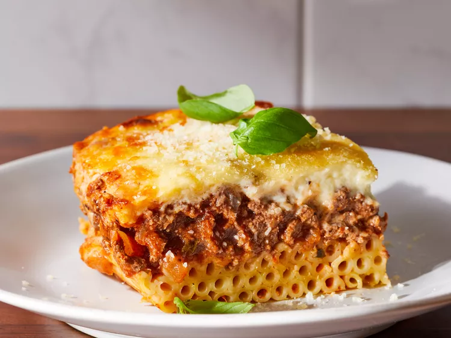
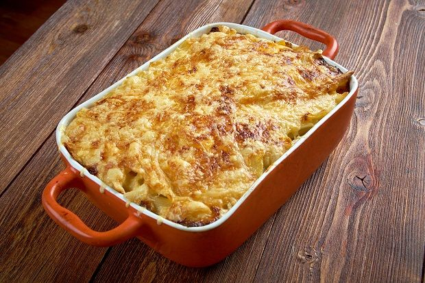

Pastitsio recipe
This is the recipe of a traditional greek plate that is called pastitsio. I
post this specific recipe, since it has been my favourite since I was a
little child. It is a combo of pasta, minced meat, besamel and a generous
bunch of cheese on top. No need to refer that my mom's pastitsio is the best
in the whole world.


Ingredients
- 1 packet of special pastitsio pasta
- 800 grams minced meat
- 2 onions
- butter
- 2 garlic cloves
- 400 grams tomatos
- 1 cinamon stick
- 10ml of cognac
- 1 bay leave
- 2 liters of milk
- 125 grams flour
- 200 grams cheese
Execution
- Cook the minced meat first and let it on the side.
-
Start whisking milk,butter and flower in order to prepare the besamel.
-
Boil the pasta for 2 minutes less than what is referred in the
package.
-
Start constructing the pastitsio by placing pasta, minced meat and
besamel on different layers.
- Cook it in the oven on 180C for 45 minutes.